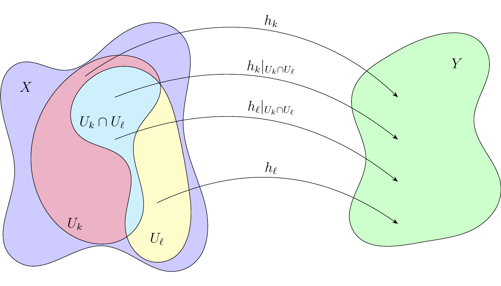
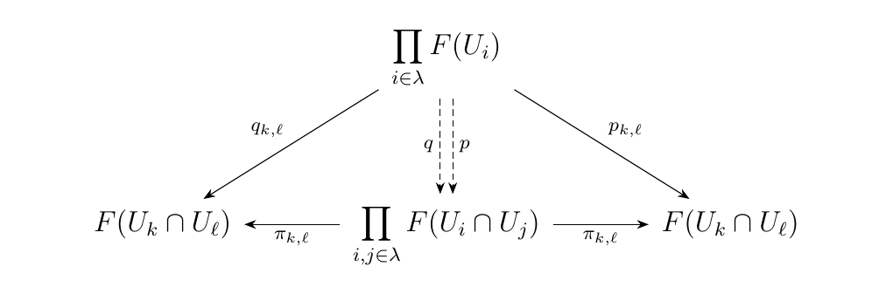
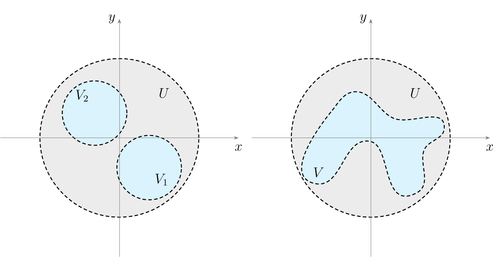
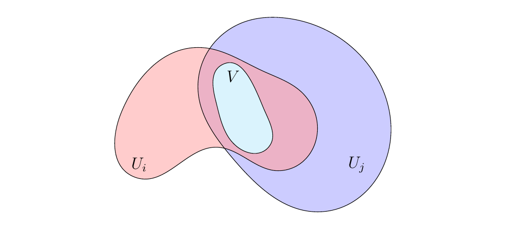

10.2. Abstracting Sheaves
We will now take a more categorical approach to extract the key properties of a sheaf, so that we may generalize our logic. Towards that goal, we'll introduce a second definition of a sheaf, one which is equivalent to what the reader has already seen; it will offer a new perspective. To motivate this perspective, we will again use our canonical sheaf of continuous functions:
Consider an open set \(U\) of \(X\), and let \(\mathcal{U} = \{U_i\}_{i \in \lambda}\) be an open cover of \(U\). Let us make a few nontrivial observations. The reader is strongly encouraged to move forward with pen and paper in hand and to draw lots of pictures.
-
A family of continuous functions \(h_i: U_i \to Y\) can be viewed as an element \((h_i)_{i \in \lambda}\) of the product \(\prod_{i \in \lambda} C(U_i)\).
-
Using our open cover \(\mathcal{U}\), we can define for each pair \(k,\ell \in \lambda\) the functions
where
With a lot of notation, a picture may help.

- The fact that the functions \(p_{k, \ell}, q_{k, \ell}\) exist for all \(k, \ell \in \lambda\) implies the existence of \(p\) and \(q\) below which make the diagram commute. (This is just applying the universal property of the product \(\prod_{i, j}F(U_i \cap U_j)\).) These two functions are rather important.

Now consider the set of all \((h_i)_{i \in \lambda} \in \prod_{i \in \lambda}F(U_i)\) such that they agree on overlaps; i.e., such that \(h_i\big|_{U_i \cap U_j} = h_j\big|_{U_i \cap U_j}\) for all \(i, j \in \lambda\). We call this set \(\text{Eq}(p, q)\):
However, since \(C\) is a sheaf, we know that for every such \((h_i)_{i \in \lambda}\) in \(\text{Eq}(p, q)\) there exists a unique \(h: U \to Y\) such that \(h|_{U_i} = h_i\). Therefore, we see that
Okay, so that's just a slightly more complicated way of expressing \(C(U)\). What's interesting about this, however, is that \(\text{Eq}(p, q)\) is quite literally the equalizer of \(p\) and \(q\) (hence the naming we chose for the set).
This is the motivation behind the following definition of a sheaf, which is exactly equivalent to our previous one.
A sheaf (of sets) on a topological space \(X\) is a functor
with the following property: If \(U\) is an open set and \(\mathcal{U} = \{U_i\}_{i \in \lambda}\) an open cover of \(U\), then \(F(U)\) is an equalizer of \(p\), \(q\), constructed using \(\mathcal{U}\) as above. The equalizer diagram is below:
We remark two comments on this definition.
-
It is more important to understand the philosophy of the above definition rather than the literal text of it (of course, that's necessary). For example, a topological space does in fact speak of families of sets which are closed under arbitrary union and finite intersection. But that's a literal definition, and not the philosophy of a topological space.
-
There are many ways to state the definition of a sheaf. The one offered above is very powerful because it allows us to quickly capture many useful situations and it is useful for proofs.
Now before we move on, we are going to briefly introduce a new concept.
Let \(\cc\) be a category and \(C\) an object of \(\cc\). A sieve on \(C\) is a set \(S\) which is a subset of all morphisms with codomain \(C\):
with following property. \begin{description} \item[(SV1)] If \(f\) is in \(S\), then \(f \circ h\) is in \(S\) for any composable \(h\). \end{description}
We will demonstrate an example of this concept, specifically to capture why we care about it.
Let \(X\) be a topological space, and consider the category \(**Open**(X)\). Let \(U\) be an open set of \(X\). To speak of a sieve on \(U\), we must first realize that the set of all objects with codomain \(U\) is simply the set
This set may actually be treated as the object set of the full subcategory \(**Open**(U)\) of \(**Open**(X)\).
So, what is a sieve in this case? It is any \(S \subset \Omega_U\) such that \begin{description} \item[(SV1)] If \(V \in S\), \(V'\) is open, and \(V' \subset V\), them \(V' \in S\). \end{description} Take note that this is a bit of subtle concept; it's a very versatile definition. For example, considering \(\rr^2\) with its standard topology, the following (blue) open sets create sieves on the same open set (the open disk at the origin).
 On the left, we consider the set of all open sets contained in \(V_1\) and \(V_2\); this is a sieve on the open disk (which we call \(U\) to be consistent with our notation and discussion). On the right, we consider the set of all open sets contained in the weirdly shaped \(V\); this is also a sieve on \(U\).
Some important facts about sieves on topological spaces that will be of interest to us.
-
Every open set \(V \subset U\) corresponds to a sieve, which we call a principal sieve. This sieve is simply the set of all open \(V'\) contained in \(V\). In the previous example, the weirdly shaped region inside the open disk at the origin is a principal sieve.
-
Every open cover of \(\mathcal{U} = \{U_i\}_{i \in \lambda}\) creates a covering sieve \(S_{\mathcal{U}}\). This sieve is the set of all open \(V\) such that \(V \subset U_i\) for some \(i\), and where \(V' \subset V\) implies \(V'\) is also in the set.
Additionally, a covering sieve induces a (fairly stupid) functor \(\mathcal{S}\), where:
We are now prepared to continue our discussion. Our goal now will be to express the equalizer \(E\) of \(p, q\) categorically (i.e., without reference to its elements). Let \(P: \mathcal{O}(X)\op \to **Set**\) be a presheaf. Given an open set \(U\) with open cover \(\mathcal{U} = \{U_i\}_{i \in \lambda}\), we may construct \(p, q\) using \(\mathcal{U}\) as before, and take their equalizer \(E\):
We now prove the following result.
Let \(E\) be the equalizer of \(p, q\) constructed using an open cover \(\mathcal{U}\) of \(U\). Let \(\mathcal{S}\) be the sieve functor induced by \(\mathcal{U}\). Then
That is, there is a bijection between \(E\) and all natural transformations between \(\mathcal{S}\) and \(P\).
We know that
We'll show that every \((h_i)_{i \in \lambda}\) can be used to build a natural transformation between \(\mathcal{S} \to P\). Showing the other direction is not hard.
Let \(S_{\mathcal{U}}\) be our covering sieve induced by \(\mathcal{U}\). Consider an element \((h_i)_{i \in \lambda}\) in \(E\). For each \(V \in S_{\mathcal{U}}\), we define \(h_V \in P(V)\) as
where \(i\) is the index such that \(V \subset U_i\). Of course at least one index exists, but it might not be the only index. Thus, a natural objection to this definition is the following question: What if \(V\) is contained in \(U_i\) and \(U_j\) for distinct \(i\), \(j\)? In this case, how do we define \(h_V\)?
 If \((h_i)_{i \in \lambda} \in E\), then we know that agreement on the overlaps is guaranteed and so we may unambiguously write \(h_i|_V = h_j|_V = h_V\). Hence, each \(V \in S_{\mathcal{U}}\) corresponds to some unique \(h_V \in P(V)\) for every \((h_i)_{i \in \lambda} \in E\). Furthermore, we know that if \(V' \subset V\), then \(h_V|_{V'} = h_{V'}\).
These facts allow us to create the following natural transformation \(\theta: \mathcal{S} \to P\) using an element \((h_i)_{i \in \lambda}\) of \(E\), as follows.
- If \(V \in S_{\mathcal{U}}\), we write \(\theta_V: \{\bullet\} \to P(V)\) where \(\theta_V(\bullet) = h_V\), the unique \(h_V\) we already know exists.
This allows us to create the function
It is not difficult to show that every natural transformation between \(\mathcal{S}\) and \(P\) corresponds to a unique element in \(E\), thereby giving us an inverse to this function. Thus we have our result.
The above result is key to the the following proposition, which is what allows us to speak of a sheaf more abstractly. Before we introduce the proposition, we make a few comments.
- Let
Let \(P: **Open**(X)\op \to **Set**\) be a presheaf. Then \(P\) is a presheaf if and only if for every open set \(U\) and covering sieve \(S\) of \(U\),